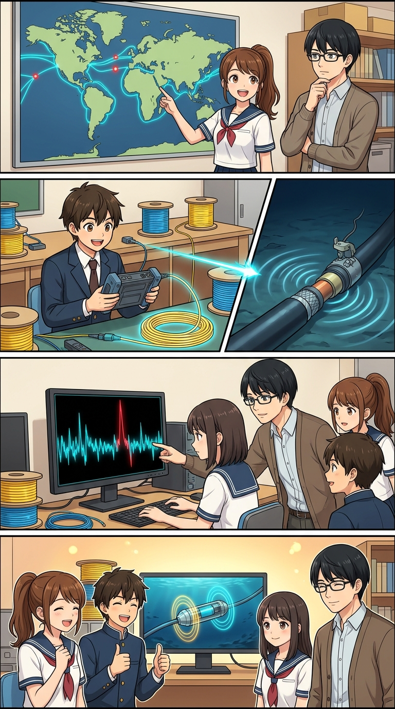
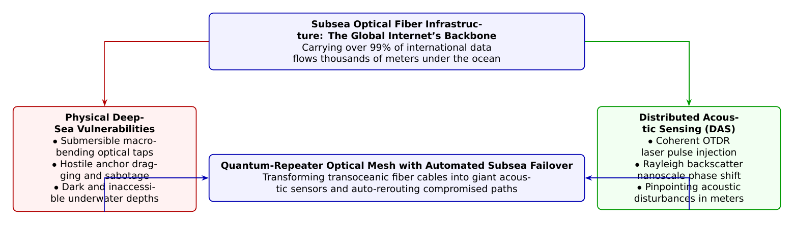

🎨 4コマ漫画挿絵（文字なし）
AI高解像度生成
▲ 【挿絵】青葉台高校 情報科学部＆帝都科学大学サイバーディフェンス・ラボでの実践シーン
💬 4コマ漫画キャラクターセリフ (Story Dialogue Script)
日・英バイリンガル (JA / EN)[蓮]「実は国際データの99%以上は、太平洋や大西洋の海底数千メートルに沈められた光ファイバーケーブルが運んでるんだよ！」
[Ren] "Actually, over 99% of global data travels through submarine fiber-optic cables resting thousands of meters deep on the seabed!"
[葵]「深海数千メートルの暗闇でこっそり線を曲げられたら、地上からは絶対に見えないじゃん！」
[Aoi] "If someone stealthily bends a cable thousands of meters underwater, how could anyone on land ever detect it!?"
[蓮]「ケーブル自身が何千キロにも及ぶ巨大な水中マイクになり、接触や振動の発生位置を数メートル単位で特定できるんだ！」
[Ren] "The cable itself becomes a thousand-kilometer seismic acoustic sensor, pinpointing physical tampering down to meters!"
[全員]「地球を一周する光の脈動を、私たちは決して途切れさせない！」
[All] "We will never let the global pulse of light encircling the Earth be severed!"
📖 小説本文
冬の夕闇が迫る青葉台高校の情報科学部室。中央の大型ディスプレイには、太平洋と大西洋を取り囲むように、幾千もの色鮮やかな線が蜘蛛の巣のように張り巡らされた地球儀が映し出されていた。
「……葵先輩、この無数のライン、何だと思いますか？」
神崎蓮が手元の光ファイバーコードを指先に巻きながら尋ねた。
「えっ？ 国際線の飛行機の航路……じゃなくて、宇宙の衛星軌道？」橘葵が小首をかしげる。
「全部、海の底に沈んでいる『海底光ファイバーケーブル』ですよ」
「ええっ！？ 海の底！？」葵が目を丸くしてディスプレイに顔を近づけた。「国際電話とか海外のWebサイトを見るのって、宇宙の衛星が電波で中継してるんじゃないの！？」
「衛星通信が担っているのは全体の1%未満に過ぎないんだよ」
ドアを開けて入ってきた城崎悠真が、あたたかい緑茶の缶を配りながら説明を引き継いだ。 「現代の地球規模のインターネット、クラウドデータ、金融決済（毎秒何十兆円もの国際送金）の**99%以上**は、水深数千メートルの深海底に敷設された光ファイバーケーブルの中を、光の速度で駆け巡っているんだ。まさに現代文明の最も重要で、最も脆い大動脈（Critical Infrastructure）だね」
白石結衣がノートPCを操作し、海底ケーブルの断面図を投影した。 「外径はわずか2〜3cm程度。高圧電流を送る銅管と鋼鉄ワイヤーの保護層の中に、人間の髪の毛ほどの細さの光ファイバーが数ペア入っているだけです。そして今、この海底ケーブルに対する**『深海物理サイバー攻撃』**が、国際安全保障の最大の焦点になっています」
---
📊 セキュリティ構造図解 (TikZ LuaLaTeX生成)
国家安全基準・工学図解
▲ 【技術構造図】IPAデジタルスキル標準・国際規格に準拠した仕組みのモデル化